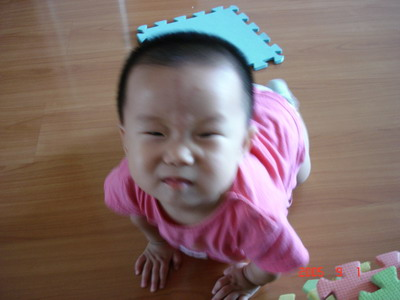
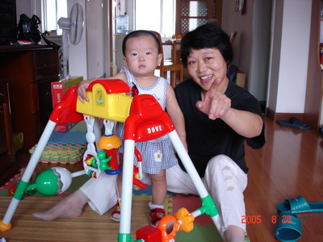
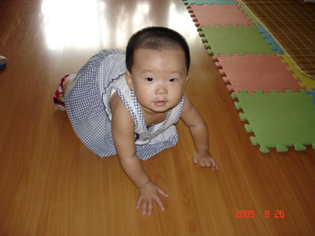

有了孩子以后,生活发生了翻天覆地的变化.转眼过了一年,说快也快,说慢也慢。再没有以前二人世界的悠闲，每次刚闲下来就会想起曼曼的衣服还没洗，奶瓶还没消毒，又有件小衣服需要改改了……。屋子里的
东西越来越多，换季的被子和衣服又该清理一遍了，却总是没有时间去清。好像我们一辈子的事情都挤在
这几个月里了：郭嘉每周末上课，马上要考试了；我们的房子正在装修，该交中期款了；我已经提转业了
，马上被室里调了一个组，需要打理一堆关系；每天跑来跑去觉得北京已经到了没有车不行的地步，又准
备去学车买车了。日子就这么忙忙乱乱的过去，曼曼就这么长大了。
曼曼快一岁的时候，突然开始喜欢用手指认东西了。以前我总想教她指，但她却一直只是用眼睛看，
不用手指，现在好像突然开窍了一样，什么都开始用手指了。每天早上起来，她要用手把屋里的东西都指
一遍，每指到一个东西都需要我说出这个东西的名字，然后她才换下一个。她会指认东西之后，好像什么
都明白了一样。我教她认了一个空调，她马上就明白每家窗户外面挂的都叫空调；认了一个自行车，她就
知道路边停的全都是自行车。吃饭时玩具掉到地上，她就指着掉的东西嘴里“啊啊”的叫着，直到我们把
她要的东西捡给她为止。还没到一岁，我说“曼曼几岁了？”她就会竖起一个手指表示自己一岁了。她认
识自己的五官，说“小嘴呢”？她就把小嘴弄得“叭叭”响；说“小鼻子”，她就使劲吸鼻子；说“小眼
睛”，她就使劲眨眼；说耳朵她会摸耳朵；说小手她就晃着自己两只小手；说“脚”她就会把脚抬起来。
曼曼十分聪明，学东西很快，什么东西往往说一两遍她就记住了。

还有一个星期多到一岁的时候，曼曼开始尝试走路了。前两天她迈一两步就会摔倒，过两天后就能迈
个三四步了，然后能迈八步，到一岁的时候能迈十六七步了，再过两天就可以满屋走了。曼曼走路也经常
摔跤，但她从来不害怕，也摔不疼，每次自己爬起来又接着走，所以她学走路我们都没有费多大的力气。

西安的姑奶奶带了曼曼一段时间
曼曼一岁的前一天是星期日，我和郭嘉带曼曼去景山公园，曼曼在景山顶上绕着亭子走了一圈，她摇摇摆摆的样子引得山顶的外国朋友笑着逗她和她打招呼。曼曼过生日的时候，爷爷奶奶都不在家，我们给她买了一个小蛋糕，可是她不太爱吃，最后都让我和郭嘉给吃掉了。我对曼曼说：“从今天开始，你就是个1岁的孩子了。你要乖乖的，快快长大，做个健康快乐的好孩子。”曼曼才不理我呢，早就爬走了，嘴里还“爸爸妈妈”的乱叫一气。
曼曼一岁时会叫“爸爸、妈妈、奶奶、阿姨”，过两天又会叫“姐姐”了。不过正经让她叫的时候她从来不叫。
曼曼1岁过半个月的时候，体重11.1kg，身高78cm。
